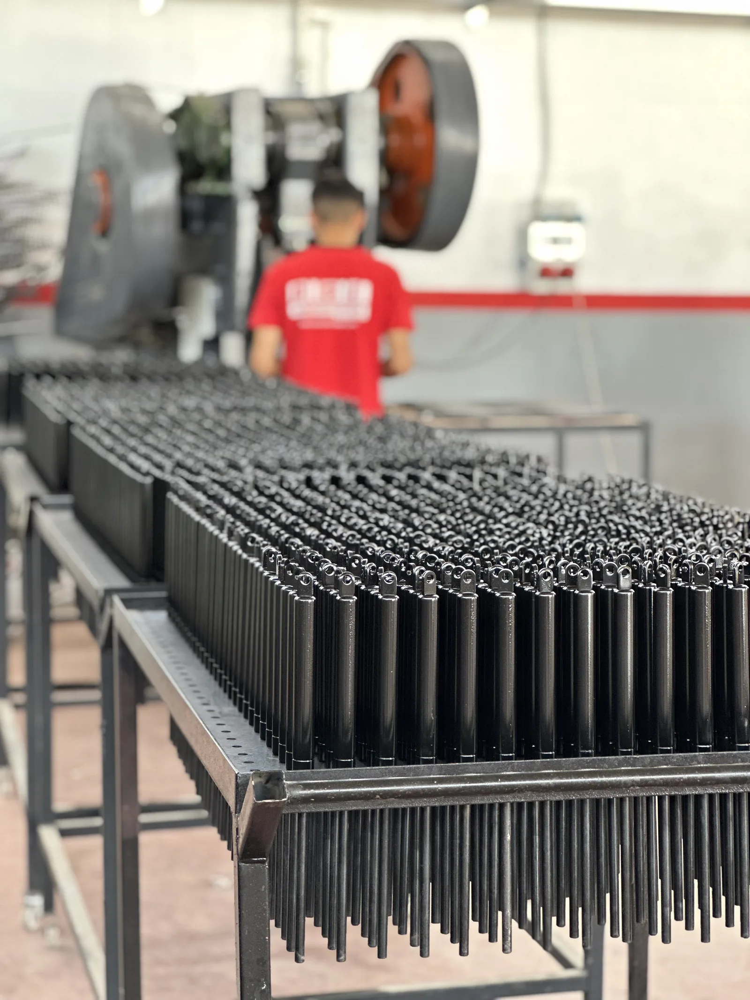

Dürüstlük
Teklif ettiğimiz ürün ile teslim ettiğimiz ürün aynıdır. Söylediğimiz tarihte sevk ederiz.

Nizip / Gaziantep'te kurulu üretim tesisimizde gazlı amortisör, piston ve gaz yayı üretiyoruz. Kendi imalatımız, kendi kalite kontrolümüz ve kendi teslim sözümüzle çalışıyoruz.
BSİ Amortisör, mobilya sektörünün baza ve dolap mekanizmaları için ihtiyaç duyduğu gazlı amortisörleri üretmek üzere yola çıktı. Zamanla medikal, otomotiv, denizcilik ve endüstriyel uygulamaların taleplerini karşılayacak bir ürün gamına ulaştık.
Bugün hammadde temininden talaşlı imalata, montajdan gaz dolumuna ve yüzey işleme kadar tüm süreçleri kendi tesisimizde yönetiyoruz. Bu bütünlük; ölçü hassasiyetini, parti tekrarlanabilirliğini ve teslim sürelerinin kontrolünü beraberinde getiriyor.
Amacımız basit: sipariş ettiğiniz pistonu, söz verdiğimiz kalitede ve tarihte teslim etmek.

Müşteri odaklı çalışıyoruz. Kalitenin, müşterilerimizin pazarda rekabet edebilmesini sağlayan en önemli unsur olduğunun farkındayız.
Teklif ettiğimiz ürün ile teslim ettiğimiz ürün aynıdır. Söylediğimiz tarihte sevk ederiz.
Her parti üretim; kuvvet, ölçü ve sızdırmazlık testleriyle kayıt altına alınır.
Üretim yöntemlerimizi ve kalıplarımızı her projede bir adım ileri taşırız.
Üretimde çalışan her arkadaşımız kalite zincirinin bir halkasıdır; eğitimle güçlenir.
Talaşlı imalat, kaynak, montaj, gaz dolumu, test ve yüzey işlem istasyonları; aynı çatı altında planlı bir akışla çalışır.
Mil, gövde ve uç elemanlarının hassas işlenmesi.

Kuvvet, ölçü ve sızdırmazlık testleri.

Conta, gaz dolumu ve final montaj işlemleri.
Seri üretim için düzenlenmiş istasyon akışı.
Korumalı ambalaj, yurt içi ve yurt dışı sevkiyat.
Krom mil, profil ve aksesuar stok takibi.
Üretimden çıkan her piston; kuvvet değeri, ölçü toleransı ve sızdırmazlık açısından kontrol edilir. Uygun bulunmayan ürün sevk edilmez.
Kalite Yönetim Sistemi
Çevre Yönetim Sistemi
İş Sağlığı ve Güvenliği
Ürün uygunluk beyanı
Belgelendirme kapsamı ve geçerlilik süreleri hakkında bilgi için bizimle iletişime geçebilirsiniz.
Üretimin tamamı tek tesiste; ara tedarikçi kaynaklı gecikme ve kalite kaybı yaşanmaz.
Hem seri üretim hem küçük partili özel imalat taleplerini karşılayabiliyoruz.
Kuvvet hesabı, malzeme ve kaplama seçiminde mühendislik desteği sağlıyoruz.
Seri üretime geçmeden numune onayı ile sürprizsiz üretim.
Uluslararası sevkiyat, ambalaj ve belgelendirme süreçlerine hâkimiz.
Doğru conta, doğru kaplama ve doğru gaz basıncı ile uzun çalışma ömrü.
Ölçü, kuvvet veya kullanım amacı fark etmez; doğru pistonu birlikte belirleyelim.